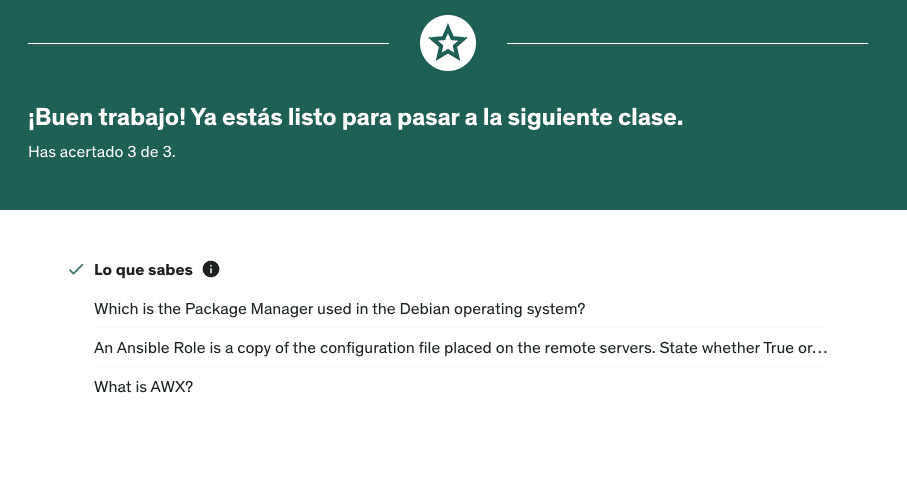

Introducción a Ansible
Post info
- Category: DevOps
- Except: Implementar DevOps y automatización con Ansible, trabajar con la línea de comando de Ansible y depurar, desarrollar y trabajar con Playbooks de Ansible.
- Post date: April 23th 2023
- Hashtags: #devops | #ansible | #automatitation
Ansible es de esas herramientas que me hubiera encantado conocer en el pasado. Y es que la automatización siempre me ha encantado por la gran versatilidad que te da en el día a día. Tras haber trabajado mucho con MacOS he aprendido a manejar herramientas como Automator, app nativa de Apple que permite realizar automatización desde macros de creación de ficheros, renombrado carpetas y estructuras de datos hasta automatizar el envío de correos electrónicos desde la app de Mail. Por eso, ahora que estoy ahondando muchísimo más en la programación encontrar herramientas que me permitan hacer automatizaciones entre servidores me parece algo maravilloso. He realizado un breve Curso de Introducción a Ansible en Udemy que podría ser interesante para el lector y conseguir en una tarde una introducción a esta herramienta que, desde luego, necesitará más tiempo para especializarse.
Epígrafes:
1) Valoración personal del curso realizado.
El saber no ocupa lugar, me encantaría tener muchísimo más tiempo para abarcar más contenido y saber que laboralmente me permitirá esta oportunidad me encanta. Uno de los primeros casos de uso que haré con Ansible en mi día a día es poder tener actualizar y hacer autofetch de mis repositorios de Github en mis dos equipos de trabajo.
2) Posicionamiento laboral de la mano de conocimientos en Ansible.
Como programador, sumar todo tipo de herramientas a nuestra caja de útiles suma SIEMPRE y por ello, la automatización es ultra necesaria en el día a día del programador. Los desarrolladores que estén en un espacio intermedio entre sistemas y desarrollo aprovecharán mucho más unos conocimientos de automatización de tareas para mejorar la eficiencia en su día a día.
3) Conclusión personal sobre el trabajo requerido.
Como he comentado anteriormente, todo lo que se pueda aprender es una inversión valida para cualquier desarrollador que quiera sumar conocimientos y ser más "valioso" para la empresa. Se me ocurren muchas tareas que hago en el día a día que pueda ahorrar tiempo con Ansible, así que, ¡manos a la obra!